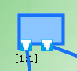

The semantic is the same as per UML 2.5. It can be seen as tokens passing. The cardinality of the pin indicates how much tokens it needs for the task to be activable, and how much at maximum it will consume.
All in all, it enables to express advance activation patterns. For instance, all pattern that can be expressed with logical expressions can easily be encoded.
| AND | OR | |
|---|---|---|
Output |
 |
|
Input |
Complex pattern of activations of the task T_E illustrates a pattern activation that could be expressed with a logical expression. For ease of encoding, it needs to be rewritten in conjunctive normal form (CNF).